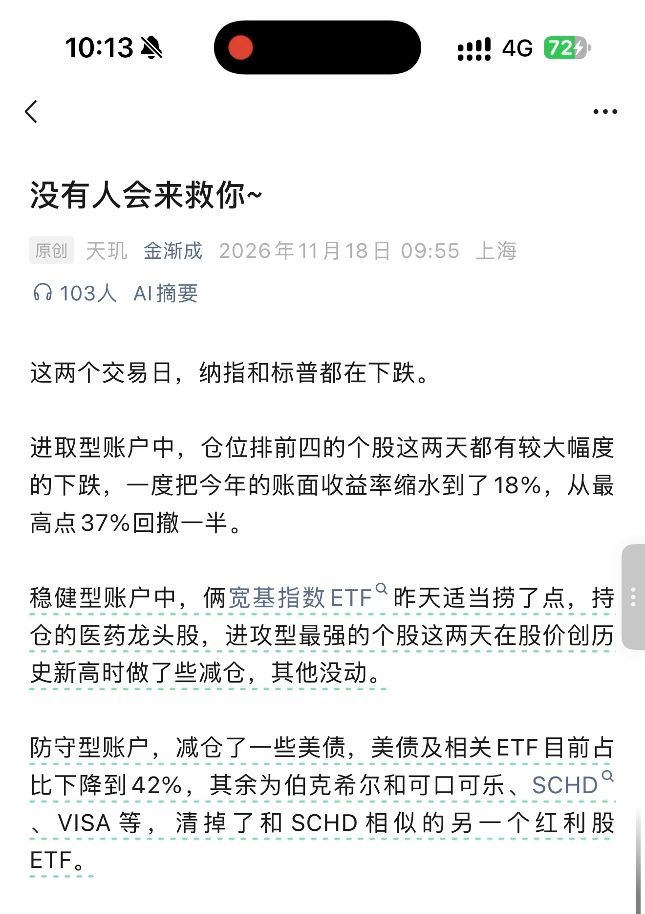
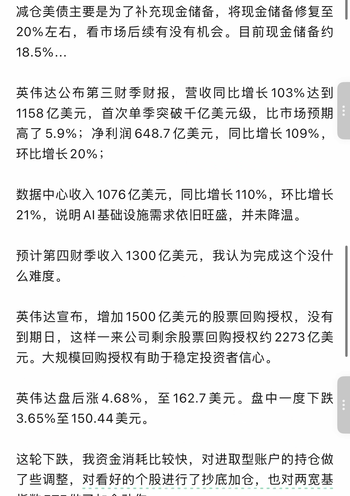
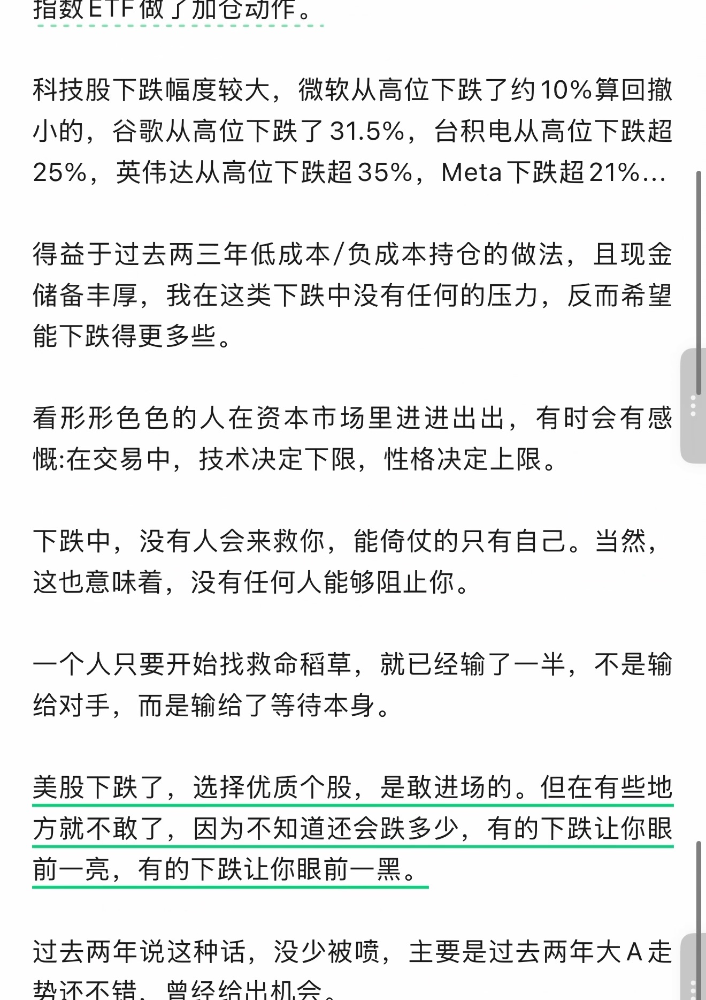
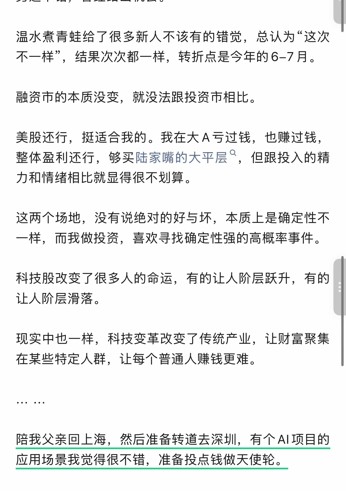
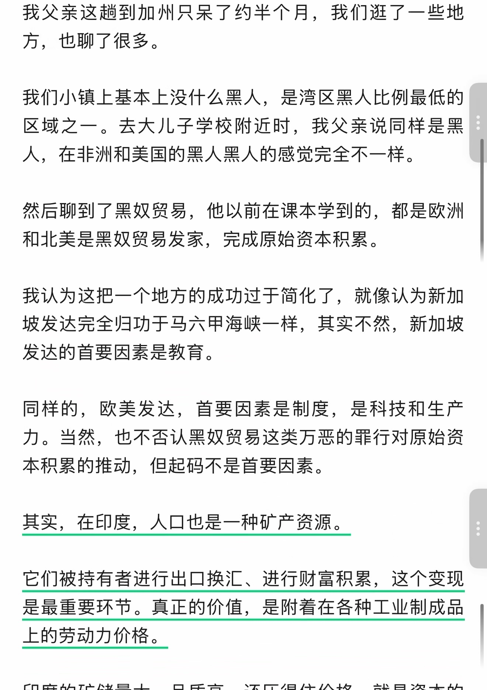
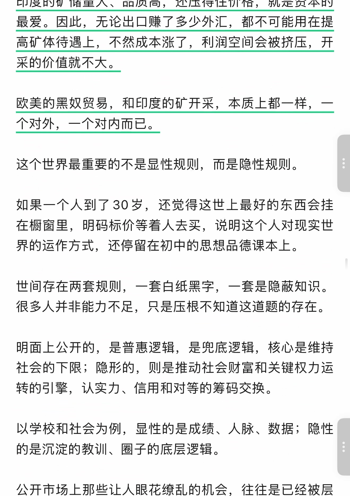
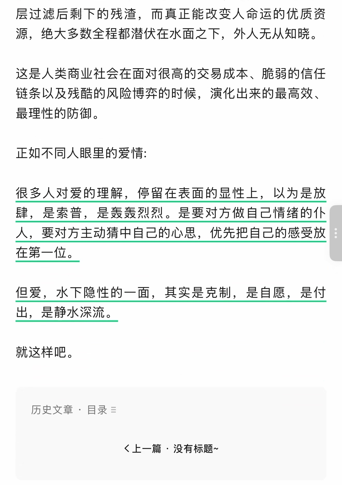
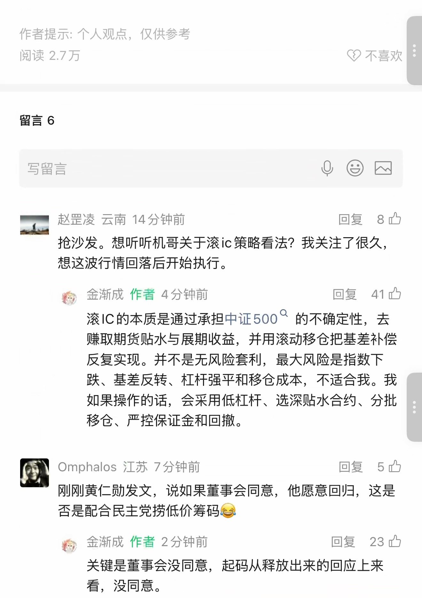
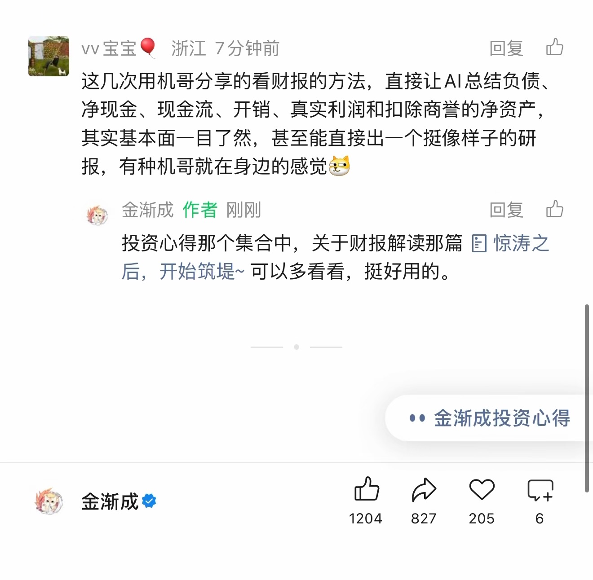

没有人会来救你~
识别文字连续阅读 · 原图附后
原始 PDF 不公开，本页展示捕获页面的截图。 识别文字按页序连续显示，全部原始截图附在文末，便于对照。文字由视觉转录整理，尚未经人工逐字核对，可能存在错字、漏字、漏行、顺序或断行错误。留言与作者回复仅限截图中可见的内容，不代表完整线上留言，也未据此推断留言总数。
OCR 识别提示（待核对）
- OCR/视觉转录文字，尚未逐字校对；可能错字、漏字、漏行，数字、姓名、表情、标点及断行也可能有误，请以截图为准。
- 这里只保留 PDF 已截到的正文、留言和作者回复；截图以外的留言不在此存档中。
- 未从截图推断留言总数或回复关系；手机界面文字也可能混入 OCR。
- 方括号中的表情说明是转录注释，原始表情请对照截图。
- 页面边界仅露出少量字形的重复行归到文字主体可见的相邻页；不推断缺失内容。
识别文字
文字按截图页序整理；页边重复行仅保留一次，原始 PDF 不公开。方括号中的表情说明为转录注释。
第 1 页对照原图
[顶部状态栏]
10:13 · 4G · 电量72%
没有人会来救你~
原创 天玑 金渐成 2026年11月18日 09:55 上海
103人 AI摘要
这两个交易日，纳指和标普都在下跌。
进取型账户中，仓位排前四的个股这两天都有较大幅度的下跌，一度把今年的账面收益率缩水到了18%，从最高点37%回撤一半。
稳健型账户中，俩宽基指数ETF昨天适当捞了点，持仓的医药龙头股，进攻型最强的个股这两天在股价创历史新高时做了些减仓，其他没动。
防守型账户，减仓了一些美债，美债及相关ETF目前占比下降到42%，其余为伯克希尔和可口可乐、SCHD、VISA等，清掉了和SCHD相似的另一个红利股ETF。
第 2 页对照原图
减仓美债主要是为了补充现金储备，将现金储备修复至20%左右，看市场后续有没有机会。目前现金储备约18.5%...
英伟达公布第三财季财报，营收同比增长103%达到1158亿美元，首次单季突破千亿美元级，比市场预期高了5.9%；净利润648.7亿美元，同比增长109%，环比增长20%；
数据中心收入1076亿美元，同比增长110%，环比增长21%，说明AI基础设施需求依旧旺盛，并未降温。
预计第四财季收入1300亿美元，我认为完成这个没什么难度。
英伟达宣布，增加1500亿美元的股票回购授权，没有到期日，这样一来公司剩余股票回购授权约2273亿美元。大规模回购授权有助于稳定投资者信心。
英伟达盘后涨4.68%，至162.7美元。盘中一度下跌3.65%至150.44美元。
这轮下跌，我资金消耗比较快，对进取型账户的持仓做了些调整，对看好的个股进行了抄底加仓，也对两宽基
第 3 页对照原图
指数ETF做了加仓动作。
科技股下跌幅度较大，微软从高位下跌了约10%算回撤小的，谷歌从高位下跌了31.5%，台积电从高位下跌超25%，英伟达从高位下跌超35%，Meta下跌超21%...
得益于过去两三年低成本/负成本持仓的做法，且现金储备丰厚，我在这类下跌中没有任何的压力，反而希望能下跌得更多些。
看形形色色的人在资本市场里进进出出，有时会有感慨:在交易中，技术决定下限，性格决定上限。
下跌中，没有人会来救你，能倚仗的只有自己。当然，这也意味着，没有任何人能够阻止你。
一个人只要开始找救命稻草，就已经输了一半，不是输给对手，而是输给了等待本身。
美股下跌了，选择优质个股，是敢进场的。但在有些地方就不敢了，因为不知道还会跌多少，有的下跌让你眼前一亮，有的下跌让你眼前一黑。
过去两年说这种话，没少被喷，主要是过去两年大A走势还不错，曾经给出机会。
第 4 页对照原图
温水煮青蛙给了很多新人不该有的错觉，总认为“这次不一样”，结果次次都一样，转折点是今年的6-7月。
融资市的本质没变，就没法跟投资市相比。
美股还行，挺适合我的。我在大A亏过钱，也赚过钱，整体盈利还行，够买陆家嘴的大平层，但跟投入的精力和情绪相比就显得很不划算。
这两个场地，没有说绝对的好与坏，本质上是确定性不一样，而我做投资，喜欢寻找确定性强的高概率事件。
科技股改变了很多人的命运，有的让人阶层跃升，有的让人阶层滑落。
现实中也一样，科技变革改变了传统产业，让财富聚集在某些特定人群，让每个普通人赚钱更难。
… …
陪我父亲回上海，然后准备转道去深圳，有个AI项目的应用场景我觉得很不错，准备投点钱做天使轮。
第 5 页对照原图
我父亲这趟到加州只呆了约半个月，我们逛了一些地方，也聊了很多。
我们小镇上基本上没什么黑人，是湾区黑人比例最低的区域之一。去大儿子学校附近时，我父亲说同样是黑人，在非洲和美国的黑人黑人的感觉完全不一样。
然后聊到了黑奴贸易，他以前在课本学到的，都是欧洲和北美是黑奴贸易发家，完成原始资本积累。
我认为这把一个地方的成功过于简化了，就像认为新加坡发达完全归功于马六甲海峡一样，其实不然，新加坡发达的首要因素是教育。
同样的，欧美发达，首要因素是制度，是科技和生产力。当然，也不否认黑奴贸易这类万恶的罪行对原始资本积累的推动，但起码不是首要因素。
其实，在印度，人口也是一种矿产资源。
它们被持有者进行出口换汇、进行财富积累，这个变现是最重要环节。真正的价值，是附着在各种工业制成品上的劳动力价格。
第 6 页对照原图
印度的矿储量大、品质高、还压得住价格，就是资本的最爱。因此，无论出口赚了多少外汇，都不可能用在提高矿体待遇上，不然成本涨了，利润空间会被挤压，开采的价值就不大。
欧美的黑奴贸易，和印度的矿开采，本质上都一样，一个对外，一个对内而已。
这个世界最重要的不是显性规则，而是隐性规则。
如果一个人到了30岁，还觉得这世上最好的东西会挂在橱窗里，明码标价等着人去买，说明这个人对现实世界的运作方式，还停留在初中的思想品德课本上。
世间存在两套规则，一套白纸黑字，一套是隐蔽知识。很多人并非能力不足，只是压根不知道这道题的存在。
明面上公开的，是普惠逻辑，是兜底逻辑，核心是维持社会的下限；隐形的，则是推动社会财富和关键权力运转的引擎，认实力、信用和对等的筹码交换。
以学校和社会为例，显性的是成绩、人脉、数据；隐性的是沉淀的教训、圈子的底层逻辑。
公开市场上那些让人眼花缭乱的机会，往往是已经被层
第 7 页对照原图
层过滤后剩下的残渣，而真正能改变人命运的优质资源，绝大多数全程都潜伏在水面之下，外人无从知晓。
这是人类商业社会在面对很高的交易成本、脆弱的信任链条以及残酷的风险博弈的时候，演化出来的最高效、最理性的防御。
正如不同人眼里的爱情:
很多人对爱的理解，停留在表面的显性上，以为是放肆，是索普，是轰轰烈烈。是要对方做自己情绪的仆人，要对方主动猜中自己的心思，优先把自己的感受放在第一位。
但爱，水下隐性的一面，其实是克制，是自愿，是付出，是静水深流。
就这样吧。
[文章导航与提示]
历史文章 · 目录
< 上一篇 · 没有标题~
第 8 页对照原图
作者提示：个人观点，仅供参考
阅读 2.7万 · 不喜欢
留言 6
[留言 1]
赵罡凌｜云南｜14分钟前｜赞8
抢沙发。想听听机哥关于滚ic策略看法？我关注了很久，想这波行情回落后开始执行。
[作者回复留言 1]
金渐成（作者）｜4分钟前｜赞41
滚IC的本质是通过承担中证500的不确定性，去赚取期货贴水与展期收益，并用滚动移仓把基差补偿反复实现。并不是无风险套利，最大风险是指数下跌、基差反转、杠杆强平和移仓成本，不适合我。我如果操作的话，会采用低杠杆、选深贴水合约、分批移仓、严控保证金和回撤。
[留言 2]
Omphalos｜江苏｜7分钟前｜赞5
刚刚黄仁勋发文，说如果董事会同意，他愿意回归，这是否是配合民主党捞低价筹码[笑哭表情]
[作者回复留言 2]
金渐成（作者）｜2分钟前｜赞23
关键是董事会没同意，起码从释放出来的回应上来看，没同意。
第 9 页对照原图
[留言 3]
vv宝宝🎈｜浙江｜7分钟前
这几次用机哥分享的看财报的方法，直接让AI总结负债、净现金、现金流、开销、真实利润和扣除商誉的净资产，其实基本面一目了然，甚至能直接出一个挺像样子的研报，有种机哥就在身边的感觉[狗头表情]
[作者回复留言 3]
金渐成（作者）｜刚刚
投资心得那个集合中，关于财报解读那篇 惊涛之后，开始筑堤~ 可以多看看，挺好用的。
[底部界面]
金渐成（认证标记）
点赞 1204 · 分享 827 · 喜欢 205 · 留言 6
原始图片 · 9 页
第 1 页 · 原始截图


第 2 页 · 原始截图


第 3 页 · 原始截图


第 4 页 · 原始截图


第 5 页 · 原始截图


第 6 页 · 原始截图


第 7 页 · 原始截图


第 8 页 · 原始截图


第 9 页 · 原始截图


按日期浏览全部来源（同日按条目标识排序）
回到页首